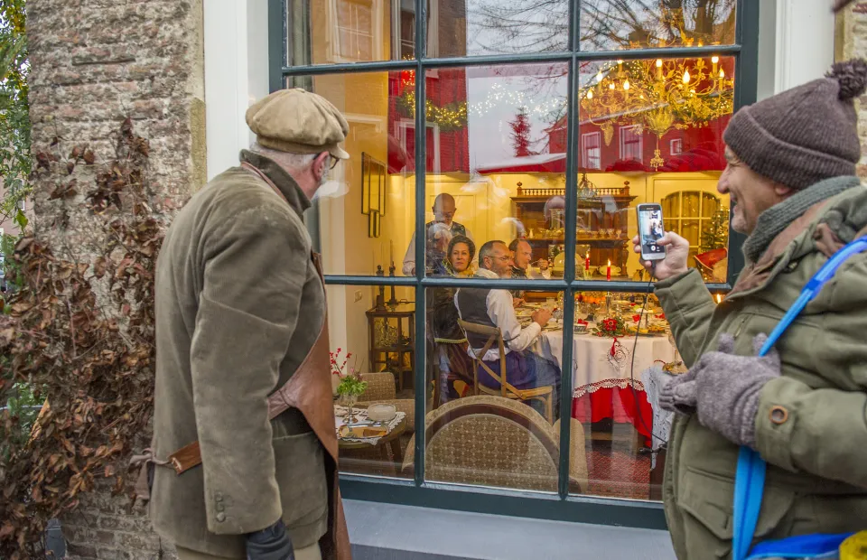

Dickens Festijn
De 19e eeuwse Engelse stad van Charles Dickens herleeft in volle glorie op zaterdag 16 en zondag 17 december in Deventer. In het historische Bergkwartier komen ruim 950 personages uit de beroemde boeken van deze Engelse schrijver tot leven: van Scrooge tot Oliver Twist, van Mr. Pickwick tot Christmas Carol Singers, van weeskinderen tot kantoorklerken.
Het Dickens Festijn is jaarlijks een groot succes en is één van de beeldbepalende evenementen van de Provincie Overijssel. Het Dickens Festijn in Deventer onderscheidt zich door het groot aantal optredens van acteurs en toneelspelers, van jong tot oud, koren, zangers en muzikanten en door de deelname van bewoners uit het Bergkwartier. U komt de acteurs en figuranten vooral op straat tegen, maar ook achter ramen of soms hoog op een dak. Dit alles maakt het festijn tot één groot ‘living outdoor- theatre’.
Naast het Dickens Festijn is er een audio-tour: de ‘Dickens Walk’ van 6 t/m 30 december. Ervaar de boeken van Charles Dickens op eigen gelegenheid via een audio-tour. Luisteraars worden aan de hand van maar liefst 18 scénes, uitgebeeld op schilderachtige foto’s, meegenomen langs een selectie boeken van Charles Dickens in het sfeervolle Bergkwartier. De audio-tour is gemaakt in samenwerking met vele betrokken partijen rondom het Dickens Festijn, waaronder het Theaterschip, Volksonderwijs, LaTalenTia en fotograaf Charles Niël. Let op: tijdens het Dickens Festijn weekend op 10 en 11 december is de audio-tour niet beschikbaar i.v.m. de drukte.
Met de betoverende lichtjes is de verlichte binnenstad al een feestje op zich. Op donderdagavond 14 december is er tot 21.00 uur in de Walstraat en Golstraat de Lichtjes Koopavond. Daarnaast staat Deventer tijdens en rondom het Dickens Festijn in het teken van kerst met vele andere activiteiten; waaronder lichtjesroute, interactieve kerststal, kerstconcerten, kerstmarkt in de Grote of Lebuinuskerk en (kerst)markten op de Brink en Grote Kerkhof.